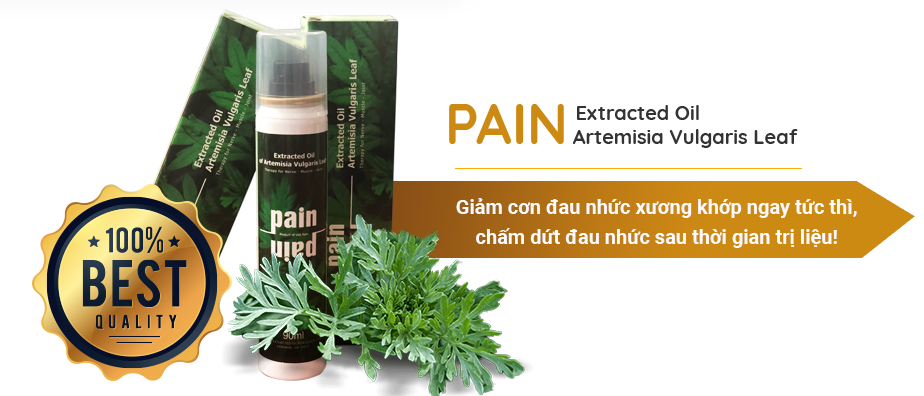
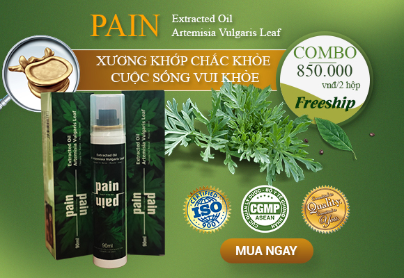
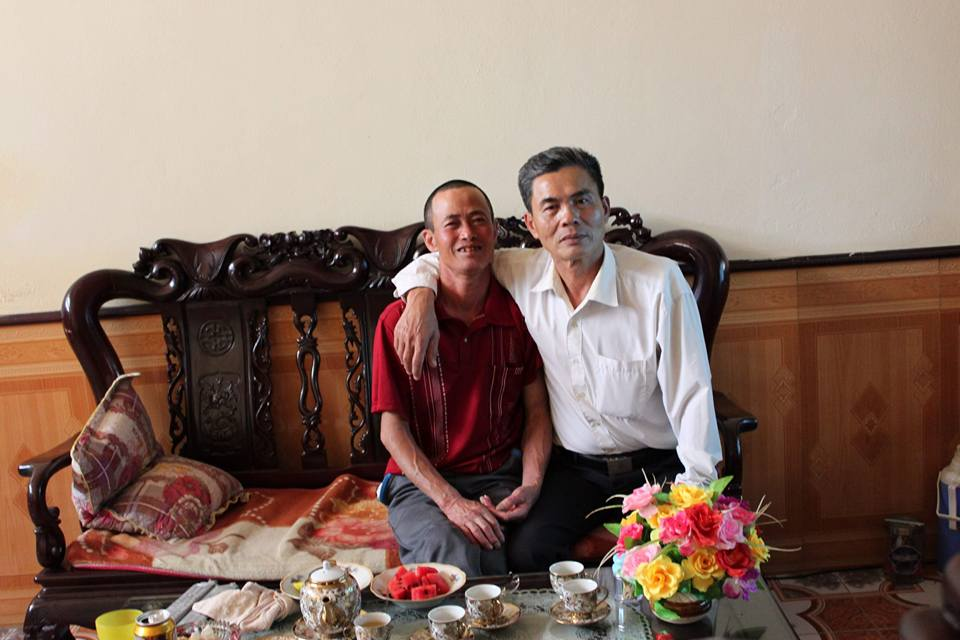

HÀNH TRÌNH VÁI TỨ PHƯƠNG ĐONG ĐẦY MỒ HÔI VÀ NƯỚC MẮT GIÚP BỐ CHỮA BỆNH THOÁT VỊ ĐĨA ĐỆM
Nhìn bố tôi giúp mẹ dọn hàng mà tay chân cứ thoăn thoắt, vẻ mặt vui tươi trong lòng tôi bỗng trào lên một niềm hạnh phúc không sao tả xiết. Tôi vui vì thực sự bố đã thoát khỏi chứng thoát vị đĩa đệm đốt sống cổ đeo bám hằng mấy năm trời thật rồi!
TÔI GHÉT BỐ!
Bố tôi rất cố chấp, rất độc đoán và cổ hủ. Bố chả bao giờ nghe mẹ và các con. Bố chả bao giờ biết lo lắng cho sức khỏe của mình. Bố chỉ biết kiếm tiền và bán rẻ sức khỏe của mình. Bố lúc nào cũng âm thầm chịu đựng nhưng lại chẳng biết rằng mẹ và chúng tôi lo lắng cho bố thế nào.
Tôi nhớ tháng 7 của 4 năm trước, khi tôi sắp bước vào một bước ngoặt lớn của cuộc đời - Kỳ thi đại học năm 2014 thì bố tôi bị chứng đau nhức bả vai và cánh tay hành hạ. Đây là thời kỳ cực kỳ quan trọng đối với tôi. Bố mẹ tôi chỉ làm nông dân thôi, cày cấy quanh năm ngoài mùa vụ ra bố mẹ còn bán hàng tạp hóa nho nhỏ ở nhà. Hồi ấy tôi chỉ biết học với học, ngoài học ra bố mẹ không cho làm gì cả, nhiều lúc mùa vụ đến bố mẹ thì đầu tắt mặt tối ngoài cánh đồng mà tôi cũng không giúp được gì. Tự nhủ với lòng cố gắng học thật tốt để thi đậu vào trường đại học danh giá để bố mẹ tự hào.
Buổi sáng chủ nhật hôm ấy, khi tôi vẫn còn đang mơ màng trong giấc ngủ vì tối hôm trước thức khuya học bài thì mẹ vỗ vai gọi: “Tâm ơi, dậy đi con, dậy đưa bố đi viện.” Nghe câu “đưa bố đi viện” mà tim tôi giật thót lại, tôi bật dậy vẫn còn không khỏi bàng hoàng hỏi mẹ: “Bố làm sao hả mẹ? sao lại đưa bố đi viện?, bố đâu rồi hả mẹ?” Tôi hỏi liên hồi và lao khỏi phòng tìm bố. Mẹ bảo: Bố mày bị đau tay cả tuần nay rồi, tay không cử động được, uống thuốc cả tuần rồi mà không đỡ, bố không cho mẹ nói vì sợ ảnh hưởng đến việc thi cử của con. Nhưng cả đêm qua bố mày đau không ngủ được nên mẹ nghĩ phải đưa bố đi viện thôi con à. Cứ để thế này thì không ổn.”
Mẹ bảo, ban đầu những cơn đau bả vai và cánh tay của bố chỉ xuất hiện ở mức độ nhẹ, sau khi nghỉ ngơi, chườm đá và uống vài viên thuốc giảm đau mà mẹ mua ở hiệu thuốc gần nhà là thấy đỡ ngay. Thế nhưng, càng ngày tần suất đau nhức của bố lại có dấu hiệu nhiều hơn, nặng hơn khi không thể cử động cổ, cánh tay và bả vai như trước. Ngay cả việc đơn giản như mặc quần áo, quét nhà hay bưng bát cơm ăn cũng là quá sức đối với bố tôi. Thế mà bao lần trong bữa cơm tôi gặng hỏi mà bố nhất quyết không nói, bố bảo là chỉ bị đau nhẹ, uống thuốc là khỏi.
Đau đớn là vậy nhưng bố nhất quyết không chịu đi khám. Mỗi lần tôi và mẹ nói đưa bố đi gặp bác sỹ xem bệnh tình thế nào bố lại gạt đi và luôn miệng nói: “Già rồi đau nhức xương khớp là chuyện bình thường; Đi khám cho tốn tiền; Đi viện còn phải người phục vụ;…”
Mẹ bảo “Bố mày đau lắm rồi, bảo đi viện mà bố mày không chịu, bảo đợi chục ngày nữa con thi đại học xong thì ông ấy mới đi.” Trong sâu thẳm những câu nói của bố, tôi thấy sót sa vô cùng vì biết rằng bố thực sự rất thương hai mẹ con và nghĩ mình là gánh nặng, sợ con gái lo lắng mà ảnh hưởng đến kỳ thi. Chả kiềm được nước mắt, tôi vừa nói vừa khóc: “Bố mà không đi viện thì con không đi thi nữa, chừng nào bố còn cố chấp thì con sẽ không học nữa.” Thế rồi cuối cùng bố cũng chịu đi khám.
HÀNH TRÌNH GIAN NAN KHI “VÁI TỨ PHƯƠNG” TÌM THUỐC CHỮA BỆNH THOÁT VỊ ĐĨA ĐỆM.
Ngay sáng hôm ấy, tôi và bố bắt xe lên bệnh viện Bạch Mai, Hà Nội, ngồi chờ khám mà mặt bố cứ tái xanh lại. Tôi biết bố đau lắm mà cố giấu thôi, chỉ mong nhanh nhanh đến lượt khám cho bố. Cuối cùng thì cũng tới lượt, sau khi hỏi han và khám lâm sàng, bác sĩ nghi là bố tôi bị thoát vị đĩa đệm đốt sống cổ, sở dĩ bác sĩ chưa kết luận là vì bố tôi chưa được chụp chiếu cụ thể.
Qua các xét nghiệm, chuẩn đoán chi tiết, bác sỹ kết luận đúng là bố tôi mắc bệnh thoát vị đĩa đệm cổ mức nhẹ không cần phải phẫu thuật và kê rất nhiều thuốc. Cầm đơn thuốc trên tay, tôi vẫn không khỏi lo lắng. Một đống kháng sinh như này, không biết dạ dày của bố có chịu được không nữa, chỉ mong sao bố sớm khỏi.
Thuốc Tây đúng là rất hiệu quả, uống hết đợt thuốc bố tôi khỏe hẳn ra, cơn đau dừng một cách đột ngột như chưa bao giờ diễn ra (điều này sau này tôi mới biết, hóa ra đơn thuốc mà bác sĩ kê phần nhiều là thuốc giảm đau). Thấy bố không còn đau nhức, tôi cũng yên tâm phần nào. Hạnh phúc ngập tràn khi hơn 2 tháng sau tôi nhận được thông báo thi đậu đại học Kinh Tế Quốc Dân với số điểm khá cao 26 điểm. Niềm vui như được nhân đôi, bố mẹ tôi tự hào lắm, lúc nào cũng đi khoe với hàng xóm, bạn bè.
Nhưng hạnh phúc chẳng tày gang thì 2 tuần sau đó những triệu chứng đau nhức ở cánh tay và bả vai lại xuất hiện trở lại. Nghĩ bệnh lại như cũ nên bố tôi ra thẳng hiệu thuốc mua theo đơn cũ về uống. Mấy ngày đầu uống bệnh cũng thuyên giảm đi phần nào. Nhưng chỉ 1 tuần sau khi dừng thuốc cơn đau lại quay trở lại khiến bố tôi phải nằm một chỗ hàng tháng trời. Đã vậy, bố tôi còn bị tác dụng phụ của thuốc khiến căn bệnh đau dạ dày trở lên trầm trọng.
Uống thuốc tây giảm đau, chống viêm không đỡ lại thêm tác dụng phụ của thuốc, tôi lại một mình lang thang tìm kiếm các phương pháp chữa bệnh an toàn, không có tác dụng phụ bằng bài thuốc dân gian cho bố. Nghe nhiều người mách rằng, bệnh thoát vị đĩa đệm cổ dùng bài thuốc ngải cứu kết hợp muối hạt và dấm nuôi đắp vào vùng thoát vị sẽ hiệu quả. Mẹ tôi lại hì hụi làm theo công thức được chỉ dẫn. Khoảng 5 ngày áp dụng bài thuốc nhưng hiệu quả chỉ dừng lại ở mức giảm triệu chứng mà không khỏi bệnh. Rồi ai mách gì cũng làm theo nhưng tất cả đều chỉ giúp bớt sưng đau và không thể dứt điểm được.
MAY MẮN TÌM ĐƯỢC THUỐC QUÝ, BỐ TÔI ĐÃ THOÁT KHỎI CĂN BỆNH THOÁT VỊ ĐĨA ĐỆM CHỈ SAU 3 THÁNG.
Sau bao cố gắng nhưng bệnh tình của bố vẫn không thuyên giảm. May mắn được chị người quen của bạn tôi làm trong viện Đại Học Y Hà Nội khuyên dùng Tinh dầu Ngải Cứu Pain - là sản phẩm thảo dược cổ truyền Việt Nam giúp điều trị viêm đau xương khớp hiệu quả. Nghe nói rất nhiều người sử dụng Tinh dầu Ngải Pain và đã khỏi, nên tôi mừng lắm.
Lên mạng tìm hiểu, tôi khá bất ngờ vì rất nhiều người chia sẻ về loại thuốc này. Đặc biệt ngoài tác dụng làm mềm gân cốt, chống quá trình xơ hóa, chấm dứt đau nhức vĩnh viễn, mọi người còn truyền tai nhau về công dụng tái tạo sụn khớp, bổ sung chất nhầy dịch khớp, tăng khả năng bôi trơn của dịch khớp một cách hiệu quả. Lúc này tôi đã đặt niềm tin hoàn toàn vào Tinh dầu ngải cứu Pain nên đặt liền một liệu trình (2 lọ) về cho bố dùng thử.

Khi đăng ký tôi được các dược sĩ tư vấn rất nhiệt tình, dựa vào kết quả chụp MRI mà bố tôi đã chụp ở bệnh viên trước đây, các dược sĩ của nhà thuốc cho biết, do các yếu tố ngoại tà như phong, hàn, thấp, nhiệt xâm nhập cơ thể làm cho kinh mạch ở vùng cổ bị ngăn trở gây ra những cơn đau vùng cổ lan xuống bả vai và lưng; ngoài ra khí huyết bị ứ trệ, không được vận hành nên sinh ra đau nhức. Dược sĩ còn giải thích rõ hơn, gốc rễ tình trạng bệnh của bố tôi là do thoái hóa đĩa đệm đốt sống cổ làm cho đĩa đệm bị khô, mất nước, mất tính đàn hồi, khô dần và nứt nẻ, lâu dần dưới trọng lực của cơ thể, đĩa đệm này bị rách ra, nhân nhầy bị thoát ra, chèn ép vào dây thần kinh gây ra tình trạng đau nhức như hiện tại của bố tôi.
Các bác sĩ còn cho biết, Tinh dầu Ngải Cứu Pain được ứng dụng sản xuất và chưng cất theo phương pháp cổ truyền từ Ngải Cứu Nhung tiêu chuẩn GMP, tác dụng trực tiếp vào vùng đau, xoa dịu cơn đau và chấm dứt đau nhức sau thời gian trị liệu. Sự kết hợp của các thành phần trong tinh dầu Ngải Cứu Pain mang lại tác dụng vượt trội, tác động kép từ trong ra ngoài làm lưu thông khí huyết, cung cấp dưỡng chất nuôi dưỡng địa đệm bị thoái hóa, làm mềm đĩa đệm, liền phần đĩa đệm bị rách, tăng tính đàn hồi cho đĩa đệm từ đó điều trị tận gốc bệnh thoát vị đĩa đệm.

Nhận được thuốc, tôi hướng dẫn bố sử dụng đều đặn theo chỉ dẫn của bác sĩ liên tục trong vòng 3 tháng. Mỗi ngày mẹ tôi xoa bóp vai gáy và cánh tay cho bố với Tinh dầu Ngải Cứu Pain 2-3 lần. Cứ mỗi lần mẹ xoa bóp xong cho bố, mặt bố tại tươi tỉnh rạng rỡ, cười cười nói nói: “Tôi chả biết là tay bà khéo hay là thuốc tốt, mà bà xoa bóp xong cơ thể tôi như được hồi sinh ấy, khỏe khoắn hẳn ra, không còn đau nhức nữa.” Thấy vậy, cả nhà mừng lắm, chỉ mong là tìm được thuốc tốt để bố chóng khỏi. Sau 1 tuần sử dụng, quả thật tôi thấy bố có chuyển biến tốt hơn hẳn, cơn đau được kiểm soát, cường độ cũng như tần suất đau giảm xuống một cách dần dần. Từ ngày sử dụng Tinh dầu Ngải Cứu pain bố khỏe lên mỗi ngày, da dẻ hồng hào hơn hẳn.
Sau 3 tháng gần như bố tôi không còn gặp tình trạng đau cứng cổ vai gáy hay cánh tay bị đau nhức và tê bì như trước nữa, bệnh cứ đỡ dần, đỡ dần rồi khỏi khiến cả nhà tôi mừng khôn xiết. Bố tôi ăn ngủ tốt hơn, thể lực được nâng lên và tinh thần cũng thoải mái hơn rất nhiều, đặc biệt vùng cổ không hề còn bất cứ cảm giác đau nhức nào, bố đã có thể cử động xương khớp vùng cổ một cách nhẹ nhàng như chưa hề bị bệnh xương khớp. Thật sự là may mắn vì cuối cùng bố tôi cũng thoát được căn bệnh này với chi phí thấp như vậy.

Đã 3 năm kể từ khi sử dụng Tinh dầu Ngải Cứu pain, dù thời tiết thay đổi nhưng bệnh thoái hóa khớp đã không còn làm phiền bố tôi nữa. Nhìn bố giúp mẹ dọn hàng mà tay chân cứ thoăn thoắt, vẻ mặt vui tươi trong lòng tôi bỗng trào lên một niềm hạnh phúc không sao tả xiết. Tôi vui vì may mắn tìm được phương thuốc tốt mà chi phí lại hợp lý giúp bố thoát khỏi chứng đau nhức bả vai và cánh tay một cách nhanh chóng và hiệu quả.
Mong rằng qua câu chuyện này, tôi sẽ giúp được cho nhiều người như bố tôi khi vẫn đang ngày đêm bị căn bệnh xương khớp hành hạ tìm ra phương thuốc tốt nhất và hiệu quả nhất.
Đây là nơi tôi đã tin tưởng và giới thiệu cho bạn bè cũng như người thân. Một liệu trình gồm 2 lọ tinh dầu Ngải Cứu Pain sử dụng trong vòng 3 tháng chỉ có giá 850 000VNĐ. Mua tại trang này bạn sẽ không phải lo hàng giả hàng nhái, sẽ được nhân viên giao hàng tận nơi, nhận hàng rồi mới thanh toán: TINH DẦU NGẢI CỨU PAIN : GIẢI QUYẾT CƠN ĐAU TỨC THÌ - DUY TRÌ XƯƠNG KHỚP BỀN BỈ!
Chúc mọi người luôn luôn khỏe mạnh và không còn nỗi lo về bệnh xương khớp khi sử dụng Tinh dầu Ngải cứu pain !
.png)
Với xu hướng chọn thuốc chữa bệnh thiên về cây cỏ, thảo mộc thay cho tân dược, sự ra đời của Tinh Dầu Ngải Cứu là một bước tiến mới trong lĩnh vực y học hiện đại. Thực tế cho thấy đây là phương pháp hoàn toàn an toàn từ thiên nhiên, mang lại hiệu quả cao, mặc dù thời gian điều trị và tác dụng lại không nhanh như khi sử dụng Tây Y thông thường nhưng đem lại hiệu quả điêu trị lâu dài, tránh tái phát bệnh.
Tinh dầu ngải được sản xuất tại Trường Đại Học Y Dược Thái Bình (Tiêu chuẩn cơ sở TCCS 19.2015/DHYDTB; TCCS 04 - 2015/YDTB). Sản phẩm được Bộ Y tế công nhận chất lượng, hiệu quả và được cấp phép lưu hành của Bộ Công An. TInh dầu ngải cứu không chỉ là sản phẩm xuất khẩu sang 1 số nước Châu Âu mà còn là món quà đặc biệt dành tặng các nguyên thủ quốc gia trong các sự kiện đặc biệt như APEC...
DƯỚI ĐÂY LÀ VIDEO HƯỚNG DẪN SỬ DỤNG TINH DẦU NGẢI CỨU NHUNG PAIN CỦA NHÀ THUỐC CHO BẠN ĐỌC CHI TIẾT TẠI ĐÂY:
Để được tư vấn cụ thể hơn về các bệnh lý xương khớp, thoái hóa cột sống cổ, thoái hóa cột sống thắt lưng , thoát vị đĩa đệm, đau thần kinh tọa ,... hoặc bạn muốn tư vấn thêm thông tin về Bộ sản phẩm Tinh Dầu Ngải Cứu Pain hãy để lại thông tin theo mẫu bên dưới, các Dược sĩ, Bác sĩ của nhà thuốc sẽ tư vấn sớm nhất!
ĐĂNG KÝ TƯ VẤN ĐẶT HÀNG